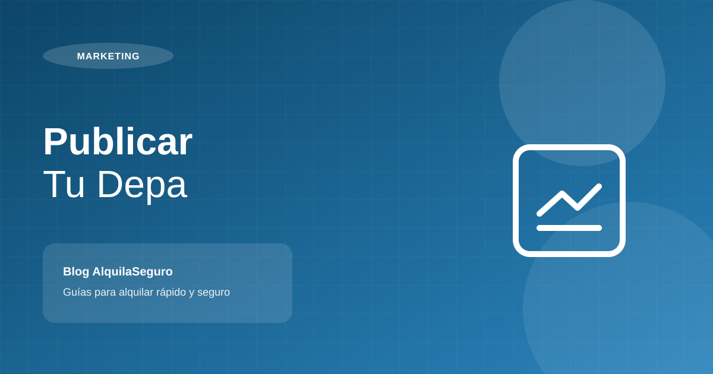
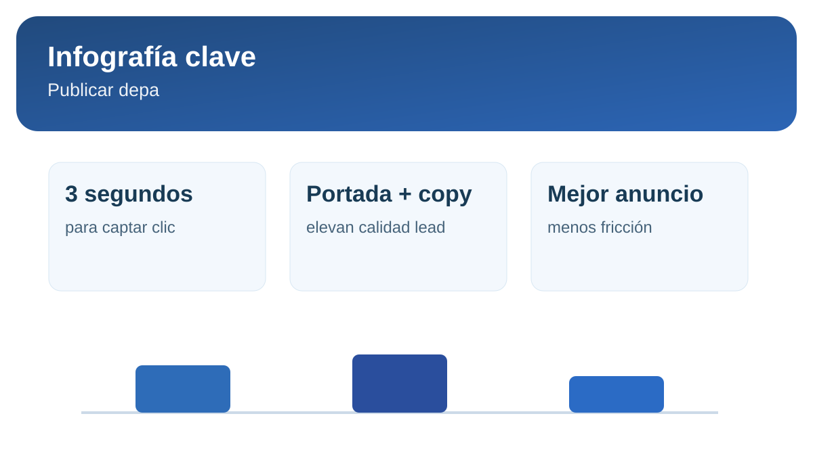

Cómo publicar tu depa para recibir mejores consultas

Una buena propiedad mal publicada suele verse igual que una propiedad promedio. Si tu publicación no transmite valor en segundos, la consulta se pierde antes de empezar.
1. Construye un título orientado a búsqueda real
El titular debe combinar tipología + zona + atributo fuerte. Ejemplo: “Depa 2 dormitorios en San Borja con cochera y vista exterior”. Esto mejora clics y filtra mejor al interesado.
2. Usa un orden de fotos que guíe la decisión
- Primera foto: ambiente con mayor impacto comercial.
- Luego: sala, cocina, dormitorios, baños y áreas comunes.
- Evita fotos oscuras, inclinadas o repetidas.
3. Escribe una descripción que responda objeciones
No basta listar ambientes. Explica beneficios de ubicación, conectividad, seguridad, condiciones de pago y perfil ideal de inquilino. Un buen texto reduce consultas de baja intención.
Infografía rápida: publicación que convierte

4. Ajusta el aviso según comportamiento del mercado
Revisa semanalmente métricas simples: impresiones, consultas y calidad de interesados. Si hay vistas pero poca conversación, normalmente debes ajustar precio, portada o descripción.
Crea una descripción más persuasiva y lista para portales.
Generar descripción de ejemplo